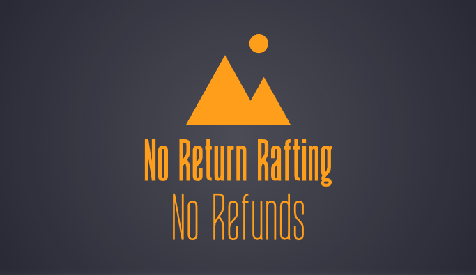

Overview
Purpose
Our purpose as a rafting company has everything to do with dangerous adventure and nothing for safety. You all will sign waivers that literally sign away your life. In exchange we offer the worlds most epic white water rafting experience.
Audience
If you're looking for the most dangerous and death defying stunts on the river, you've found it. We have ZERO regard for safety so long as it's fun.
Branding
Website Logo
Style Guide
Color Palette
| Primary | Secondary | Accent 1 | Accent 2 |
|---|---|---|---|
Typography
Heading Font: Metal Mania
Paragraph Font: Aldrich
Normal paragraph example
At No Return Rafting, we specialize in providing the most thrilling and heart-pounding white water rafting experiences imaginable. Our expert guides lead you through the most challenging rapids, ensuring an adrenaline rush like no other. We cater to adventure seekers who crave danger and excitement, offering trips that push the limits of safety and deliver unforgettable memories. Whether you're an experienced rafter or a daring novice, our company promises an epic journey filled with breathtaking scenery and exhilarating rapids.
Colored paragraph example
With great adventure comes great risk. Our rapids are known for their danger, and we require all participants to sign a waiver acknowledging the potential hazards and absolving us of liability. By signing, you are essentially signing your life away, but in return, we promise an unforgettable and heart-racing experience.
Navigation with Hover
Site Map
Wire-frames
Home